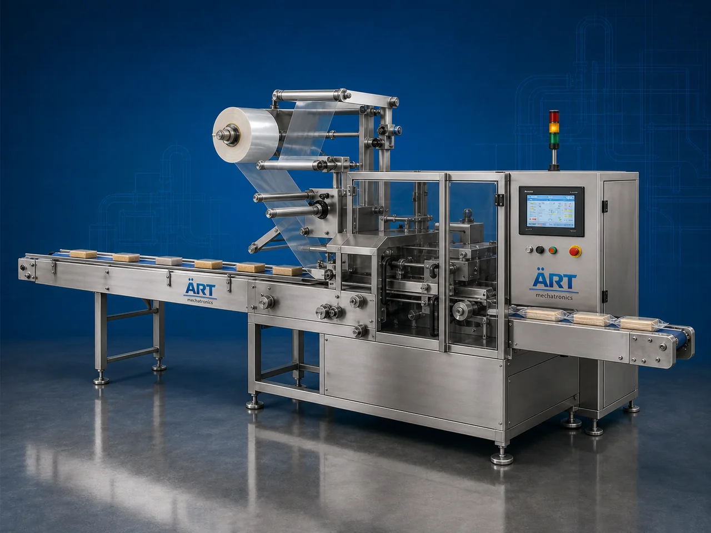

Wrapper Packaging Machine (Automatic Wrapping & Sealing System)
A Wrapper Packaging Machine, also known as a Wrapping Machine, Flow Wrap Packaging Machine, Horizontal Wrapping Machine, or Automatic Product Wrapping Machine, is an advanced industrial packaging solution designed for automatic product feeding, wrapping, sealing, cutting, coding, and high-speed…

About the Wrapper Packaging Machine
Wrapper packaging systems are widely used for: ✔ Biscuit wrapping ✔ Chocolate wrapping ✔ Soap packaging ✔ Bakery product packaging ✔ FMCG wrapping applications ✔ Retail product packaging ✔ Continuous industrial packaging ✔ High-speed product wrapping operations
The machine improves: ✔ Packaging speed ✔ Product hygiene ✔ Shelf life protection ✔ Packaging consistency ✔ Product appearance ✔ Production efficiency ✔ Retail presentation quality
Industrial wrapper packaging machines use: ✔ Servo synchronized conveyor systems ✔ Automatic film feeding systems ✔ PLC and HMI automation controls ✔ Precision sealing systems ✔ Horizontal flow wrapping mechanisms
to automatically wrap and seal products with superior packaging quality and high production efficiency.
Wrapper packaging machines are widely used in industries such as:
Food processing industries Bakery industries Chocolate industries Biscuit industries Soap industries FMCG industries Pharmaceutical industries Cosmetic industries Consumer goods industries
where attractive retail packaging and high-speed wrapping efficiency are essential.
The machine is highly suitable for: ✔ Biscuit packaging ✔ Chocolate packaging ✔ Soap wrapping ✔ Bakery packaging ✔ Candy packaging ✔ FMCG product wrapping ✔ Pharmaceutical product wrapping ✔ Consumer goods packaging
ART Mechatronics offers high-performance wrapper packaging machines, engineered for continuous industrial operation, accurate wrapping, premium sealing quality, and reliable long-term packaging automation.
Working Principle of Wrapper Packaging Machine
- 1. Product Feeding Products are loaded onto automatic feeding conveyor system.
- 2. Film Feeding & Wrapping Process Machine automatically feeds packaging film and wraps products using synchronized wrapping systems.
Servo synchronization ensures smooth product handling and accurate wrapping.
- 3. Sealing Operation Machine performs: Longitudinal sealing End sealing Heat sealing Airtight sealing
for hygienic and premium packaging quality.
- 4. Cutting Process Integrated cutting system automatically cuts wrapped products into individual packs.
- 5. Coding & Inspection Integration Optional systems include: Batch coding Date printing QR code printing Metal detection Check weighing
- 6. Finished Product Discharge Finished wrapped products discharged automatically for: Cartoning Retail display Secondary packaging Dispatch operations
Types of Wrapper Packaging Machines
- 1. Flow Wrap Packaging Machine Designed for: ✔ High-speed industrial wrapping applications
- 2. Horizontal Wrapping Machine Suitable for: ✔ Biscuit, chocolate, and bakery packaging systems
- 3. Soap Wrapping Machine Uses: ✔ Soap and personal care product wrapping systems
- 4. Food Grade Wrapper Machine Designed for: ✔ Hygienic food and pharmaceutical packaging systems
- 5. Servo Driven Wrapper Machine Suitable for: ✔ Precision high-speed wrapping operations
- 6. Fully Automatic Wrapper Packaging System Designed for: ✔ Complete industrial wrapping automation lines
Industries Using Wrapper Packaging Machines
🍪 Biscuit & Bakery Industry Biscuits, cakes, cookies, breads, and bakery product wrapping systems. 🍫 Chocolate & Confectionery Industry Chocolate bars, candies, toffees, and confectionery wrapping systems. 🧼 Soap & Personal Care Industry Soap bars, cosmetic products, and personal care wrapping systems. 🛒 FMCG Industry Consumer product wrapping and retail packaging systems. 💊 Pharmaceutical Industry Medical and healthcare product wrapping systems. 🍃 Food Processing Industry Snack food and processed food wrapping systems.
Features & Advantages
✔ High-speed automatic wrapping and sealing operation ✔ Accurate wrapping and synchronized product handling ✔ Premium retail packaging appearance ✔ PLC and servo automation control systems ✔ Improves product shelf life and hygiene ✔ Reduces packaging wastage and labor dependency ✔ Hygienic food-grade construction available ✔ Reliable long-term industrial performance ✔ Smooth and continuous wrapping operation
Technical Highlights
Machine Type: Flow wrap packaging machine Horizontal wrapping machine Automatic wrapper machine Packaging Material: Laminated films Printed packaging films Flexible wrapping films Features: PLC control system Servo synchronization Touchscreen HMI Batch coding integration Automatic cutting system Sealing Type: Longitudinal seal End seal Heat seal Airtight seal Automation: Semi-automatic Fully automatic industrial systems
Turnkey Wrapper Packaging Solutions
ART Mechatronics offers: Complete wrapper packaging systems Flow wrapping solutions Packaging automation integration systems Conveyor synchronization systems Installation & commissioning After-sales service & AMC
Why Choose Art Mechatronics
Expertise in industrial packaging and automation systems Customized wrapper packaging solutions for multiple industries High-performance and durable packaging technology Advanced PLC and servo automation systems Proven industrial packaging performance across sectors
Applications
Bakery Industries Chocolate Manufacturing Plants Soap Manufacturing Units Food Processing Industries FMCG Packaging Facilities Pharmaceutical Industries
Get pricing & specs for the Wrapper Packaging Machine
Share the product, target capacity, current process and plant location. These details help our engineers discuss the right machine or line configuration.
One partner, from design to start-up
ART Mechatronics designs, manufactures, installs and commissions your Wrapper Packaging Machine solution with regional presence in India, UAE and Thailand.